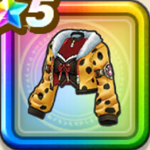

キラパンジャケット
攻略班 10点 / デイン属性耐性+5%メラ属性耐性+5%デイン属性耐性+5%ジバリア属性耐性+5%スキルの斬撃ダメージ+8%ジバリア属性斬撃・体技ダメージ+4%バギ属性斬撃・体技ダメージ+5%メラ属性斬撃・体技ダメージ+4%会心率+4%
くわしい特徴
【レベル別習得スキル】 Lv1デイン属性耐性+5% Lv3メラ属性耐性+5% Lv5スキルの斬撃ダメージ+8% Lv8会心率+4% Lv10ジバリア属性斬撃・体技ダメージ+4% Lv12バギ属性斬撃・体技ダメージ+5% Lv15メラ属性斬撃・体技ダメージ+4% Lv18デイン属性耐性+5% Lv20すばやさ+7 Lv23ジバリア属性耐性+5% Lv25さいだいMP+5 【限界突破スキル】 1凸攻撃力+12 2凸すばやさ+12 3凸守備力+12 4凸さいだいHP+12